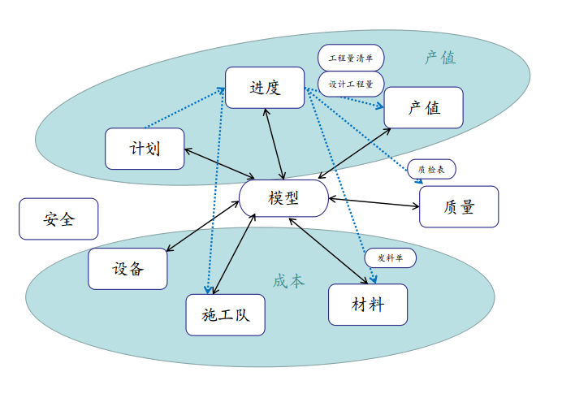
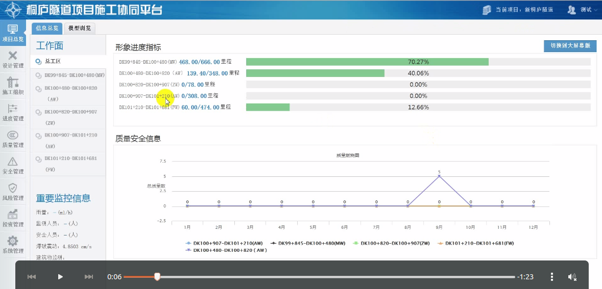

业务需求
| 部门 | 工作 | 人员角色 |
|---|---|---|
| 工程部 | 录入进度、施工日志、施工计划 | 技术员、技术负责人 |
| 计划部 | 工程量清单; 产值统计； 劳务分包 | 计划员 |
| 物资部 | 材料管理; 设备管理 | 物资员 |
| 安全部 | 安全教育、安全检查、安全交底 | 安全员 |
| 质量部 | 工程记录表、工程质检表 | 一般由技术员兼任 |
| 办公室 | 杂活：接待、生活用品等等 |
详细见李部长的《基建数字化开发核心引擎需求报告》，当前版本11.5
业务模型

模型指的是项目结构分解,单位工程,分部工程等
技术负责人制定本月要干哪些活（模型），每个活具体的施工时间。
技术员根据计划，指挥施工（进度）。钢筋加工厂与拌合站把原料发给技术员，技术员签收发料单，然后指挥工人施工。施工过程中，他需要记录某个活施工的过程（工程记录表），当某个活完工后，他需要对质量进行检验（质检表），质检合格后，他将这个事(活、施工队)汇报给计划员。
计划员根据设计工程量以及工程量清单（价格表），将这个活换算成产值，并统计施工队完成的产值。一面给回报给项目经理产值，另一方面给施工队结算工资。
物资员根据发料单，汇总用料，并根据料的价格表统计金额。
功能模块
模型创建、查找:桥梁、隧道、路基、涵洞 [确定模型创建]
进度录入： 模型完成与否（包括工程量），施工的队伍，发料单号，质检表[手机端]
工程量统计： 设计工程量解析、存储、统计、显示
产值统计： 工程量清单解析、存储、修改、统计、显示
施工队产值统计： 施工队完成工程量、产值的统计
用料统计： 发料单的解析、存储、统计、显示
质检表模板的解析、存储、查找、录入；模型质检表的关联、查询
设备信息的录入、查找
安全交底文件的保存、查找
主界面设计

主菜单在左侧，包括：项目概览 | 工程部、计划部、物资部、质量部、安全部 | 事务、云磁盘、聊天等内容
工程概览包括：2个统计图标、3D模型浏览
工程部包括： 模型的查看
计划部包括： 工程量的统计、产值统计、 施工队伍管理、 施工队伍产值统计
物资部包括： 用料统计
质量部： 质检表的查看
安全部： 安全交底文件的查看
公共模块部分略
发布计划
桥梁模型质量、产值， work
隧道桥梁质量、产值
发料单、质检表、安全交底等部分